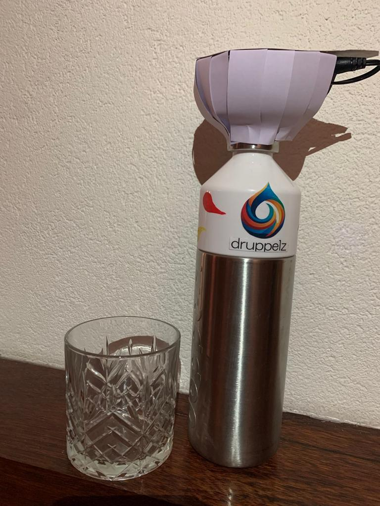

Product
Hoe werkt het?
Met de waterfles van Druppelz drink je nooit meer te weinig water. deze slimme waterfles verteld je wanneer je te weinig water drinkt en stimuleert je om genoeg water op een dag te drinken. Dit doet deze fles door de lichtgevende waterdruppel in de dop. Heb je te lang niets gedronken? Dan word deze water druppel rood om je aan te geven dat je weer meer moet drinken. Deze fles is duidelijk, is makkelijk in gebruik en zorgt er echt voor dat je genoeg water drinkt.
Waarom Druppelz?
Hoofdpijn
Wanneer het lichaam te weinig water heeft opgenomen, is het de hypothalamus, een klier in de hersenen, die aangeeft dat het lichaam aan het uitdrogen is. Het zogenaamde dorstgevoel is een eerste signaal.
Vermoeidheid
Wanneer je te weinig drinkt, gaat je lichaam rustiger aan doen om ervoor te zorgen dat er minder snel water verwerkt hoeft te worden en zo zuiniger om te gaan met de hoeveelheid vocht in je lichaam. Daardoor voel je je moe.
Rusteloosheid
Door te weinig te drinken, gaat je hartslag omhoog om je bloedstroom op gang te houden. Door een hoge hartslag kun je onrustig worden en een opgejaagd gevoel krijgen.
Misselijkheid
Wanneer je te weinig water drinkt, wordt het bloed dikker en neemt de bloeddruk af. Op die manier stroomt het bloed enkel nog naar de meest vitale organen wat leidt tot duizeligheid, concentratiestoornissen en misselijkheid. Ook ons hart heeft water nodig. Wie te weinig drinkt, beïnvloedt de werking van de zenuwcellen.